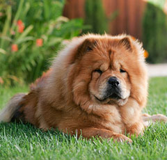
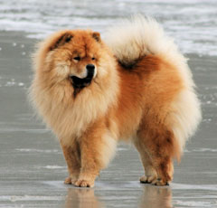
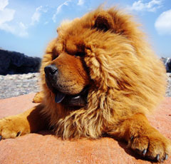

Чау- чау давним-давно перестали бути для нас екзотикою — їх досить часто можна бачити на міських вулицях. Але чомусь, углядівши цю собаку, ми як і раніше не можемо втриматися від здивування і захоплених вигуків. Собака в шкурі лева ? Лев, схожий на ведмедя ?
До речі, ведмедів дійсно нерідко записують у родичі чау -чау, аргументуючи це тим, що знаменитий синьо- чорний язик і особливу виправку ці собаки могли отримати тільки в спадок від господаря лісу. Звичайно, ідея такого споріднення дуже лестить власникам чау -чау, але ніякого наукового підтвердження вона не отримала і є скоріше красивою легендою. Більш вірогідною представляється версія про те, що чау — чау походять від нині зниклих полярних вовків, також володіли характерним синім язиком, але і ця теорія на сьогоднішній день не отримала прямих доказів.
У кожному разі, чау — чау — одна з, так званих, примітивних порід собак, які походять від вовків і не зазнали значних змін протягом часу свого існування. Взагалі, чау — чау відносяться до сімейства шпіців. Крім того, багато вчених упевнені в тому, у формуванні породи безпосередню участь брали тибетські доги. Як свідчать історичні пам’ятники, перші чау -чау, з’явилися в Китаї, Монголії і Тибеті. У минулому ці собаки виконували досить серйозні завдання : полювали, охороняли стада і житла, а також знайшли застосування в якості транспортних тварин. Існувала й ще одна, вкрай варварська і жорстока, сфера використання чау — чау — китайці вживали цих собак в їжу. Як це не сумно, але донині страви з цих тварин можна зустріти в меню деяких північно — корейських ресторанів.
У Європі, а якщо говорити точніше — в Англії, ці собаки виявилися в 1830- х роках. З тих пір порода чау — чау розвивається багато в чому завдяки англійським заводчикам і селекціонерам. По суті Великобританія є другою батьківщиною цих собак.
Хоча чау — чау найбільше схожа на чарівну іграшку, характер у неї аж ніяк не «іграшковий». Ці собаки по своїй природі досить незалежні і самостійні. І нехай сьогодні чау — чау зазвичай сприймаються виключно як декоративних собак і компаньйонів, вони цілком здатні взяти на себе функції сторожа.
Вважається, що чау — чау — собака одного господаря. Втім, і по відношенню до решти членів родини це інтелігентне і розумна тварина поводиться гранично дружелюбно і делікатно.
Види, стандарти і різновиди
Зовні сучасні чау — чау — це середніх розмірів собаки, компактного статури, квадратного формату, з благородною поставою і досить великий, але пропорційною головою. Зростання чау — чау може становити 48-56 см для псів і 46-51 см для сук. Вуха у цих собак маленькі, «дивляться» вперед. Стандартом визнаються тільки суцільні забарвлення чау — чау : червоний, чорний, блакитний, цімт, кремовий або білий, допускаються різні відтінки, але ні в якому разі не відмітини.
За типом вовни розрізняють два різновиди цих собак — довгошерсту і короткошерстну. Для довгошерстих собак характерний пухнастий комір навколо шиї і розкішні очоси на кінцівках. У короткошерстих чау — чау волосся пряме, вертикально стоять, оксамитові на дотик.
вибір цуценяти
Чау- чау — собака — доля. Вона володіє своєрідним і незалежним характером, який вирізняє її від більшості інших порід. Якщо ви чекаєте від свого вихованця бурхливих проявів почуттів, то чау — чау — собака не для вас. Якщо вам потрібен темпераментний партнер для активного проведення часу, виберіть іншу породу. Однак, якщо ви цінуєте в собаці міцні нерви, прекрасну витримку і природну делікатність, чау — чау — абсолютно ваша тварина.
У кожному разі, перед тим як відправитися в розплідник за щеням, добре обдумайте це рішення і зважте свої можливості. Крім того, потрібно зрозуміти мотиви, які керують вами в бажанні завести цю незвичайну породу. Чи плануєте ви виставкову кар’єру? Чи хочете займатися розведенням ? Або собака потрібна вам виключно в якості домашнього улюбленця і компаньйона ?
Від відповідей на ці питання залежить багато чого — зокрема, стать і ціна майбутнього вихованця. Якщо ви не плануєте брати участь у виставках, при виборі щеняти можете сміливо довіритися інтуїції і почуттю симпатії. Інша справа — придбання перспективної собаки, в майбутньому претендує на чемпіонські титули. У цьому випадку вам доведеться розраховувати на більш серйозні матеріальні витрати. Крім того, необхідно заручитися підтримкою експерта породи, який зможе допомогти у виборі цуценяти.
Корисним заходом стане відвідування виставки чау — чау (краще кількох). Тут ви зможете ближче познайомитися з собаками, їх заводчиками, визначитися з найбільш симпатичними вам родинними лініями та розсадниками. При виборі цуценяти найпильнішу увагу слід приділити його походженням, тому обов’язково познайомтеся з його мамою і, по можливості, з татом. Собаки з гарним екстер’єром і міцним здоров’ям, швидше за все, дадуть якісне потомство. Звичайно, це не означає, що, набуваючи цуценя від елітних виробників, ви отримуєте гарантію того, що і ваш вихованець буде успішний на рингах. Проте, генетика може дуже багато чого сказати про майбутнє вашої собаки.
При відвідуванні розплідника зверніть увагу на умови, в яких містяться щенки. Ознаки хорошого розплідника — чистота, охайність, спеціальне відведені місця для сну і туалету, достатні площі для щенячі ігор і, звичайно, добре ставлення заводчиків до своїх собакам.
Не забудьте як слід оглянути цуценя на предмет здоров’я. У здорової тварини повинен бути блискучий, холодний носик (якщо воно не спить), м’який животик, чисті шкіра, очі і вуха. Обов’язково з’ясуйте у заводчика, які цуценятам були зроблені щеплення і чи пройшли вони дегільмінтізацію.
Особливості утримання, догляд, здоров’я
Чау- чау — дуже красиві собаки і, можливо, комусь може здатися, що догляд за ними трудомісткий і вимагає великих витрат часу. Це не зовсім так, а точніше — зовсім не так. Чау- чау дуже охайні за своєю природою, а крім того, їх шерсть має особливу структуру, завдяки якій вона практично не звалюється, не мажеться, а в разі забруднення очищається сама. Додамо, що чау — чау — порода зручна в змісті і може пристосуватися як до життя за містом, так і до міської квартири.
У звичайному режимі чау — чау необхідно досить регулярно (не рідше одного разу на тиждень) вичісувати спеціальною щіткою з рідкими зубчиками. Звичайно, в період линьки, коли в шерсті собаки утворюється велика кількість відмерлих волосся, розчісувати її потрібно частіше. Щоб уникнути колтунов особливу увагу слід приділити областям за вухами і під пахвами. Що стосується водних процедур, то купати чау — чау потрібно тільки в міру реальної необхідності (зазвичай 2-3 рази на рік), а також перед виставками.
В цілому, догляд за цією породою мало чим відрізняється від догляду за іншими собаками. Не забувайте регулярно чистити своєму вихованцеві вуха і очі, а також стежити за тим, що кігті тварини завжди були в належному стані.
Виховання і дресирування
Вихованням собаки слід починати займатися з перших же хвилин її появи в будинку. Рецепт вихованого тваринного проста: не дозволяйте малюку робити те, чого не захочете терпіти від дорослого собаки.
Не дозволяти — це означає, доступно продемонструвати цуценяті своє невдоволення його вчинком. Крім виняткових випадків, не варто застосовувати до цієї тонкої і чутливої натурі фізичних покарань і брутальності. Чау- чау прекрасно розуміє просто строгий тон і гучний, але не дуже болючий, ляпанець газетою.
Перші команди, яким слід навчити свою собаку — це її кличка і «до мене». З перших же днів привчайте чау — чау до повідця і нашийника. Як ми вже говорили, ці собаки дуже охайні, а тому досить швидко звикають здійснювати туалет на вулиці. Найголовніше тут — строго дотримуватися певного розкладу прогулянок.
Розплідники і клуби
Розведенням цих собак у нас почали займатися досить давно — ще після війни. Однак, зважаючи на «залізної завіси» і, як наслідок, обмеженості племінного матеріалу, перша радянська лінія чау — чау була вкрай далека від світових ідеалів. Новий виток розвитку породи в нашій країні припадає на 70 — 80 -ті роки, коли у радянських кінологів з’явилася можливість ввозити більш якісних собак. З 1997 року діє Національний клуб породи чау — чау. Копітка робота наших заводчиків дала свої плоди, і на сьогоднішній день російські собаки представляють породу на гідному міжнародному рівні.